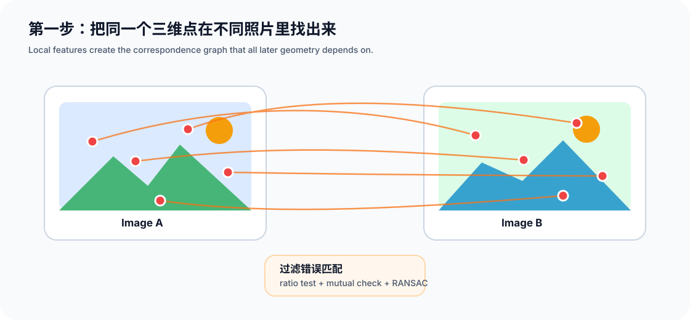
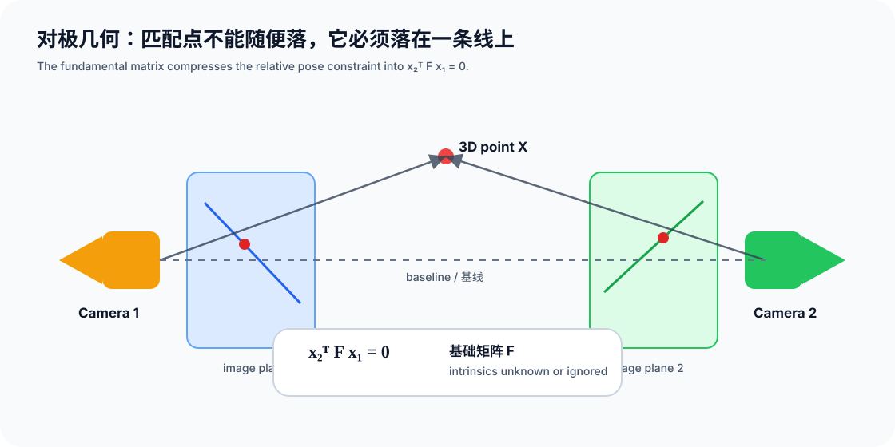
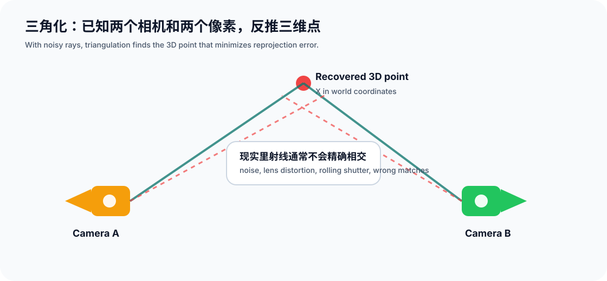
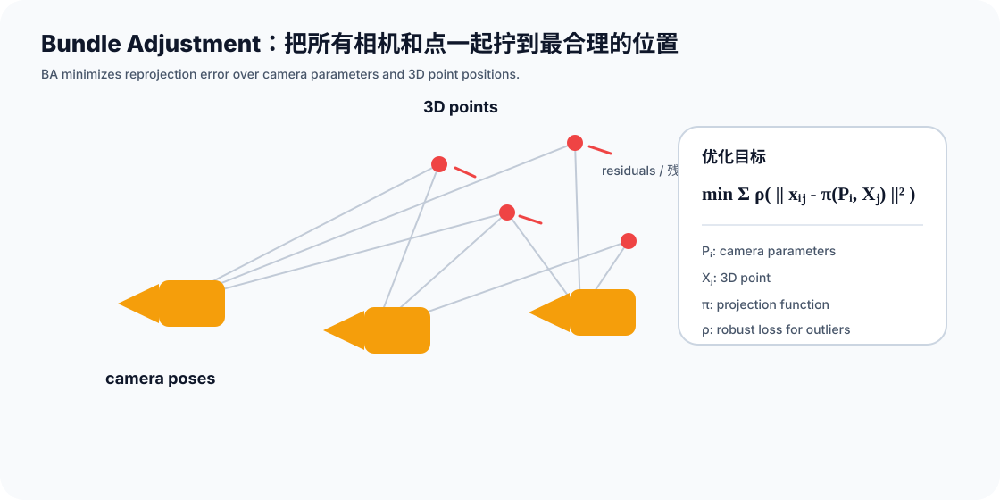

How SfM Works: Recovering 3D Structure from Photos
Structure from Motion answers a deceptively simple question: given only photos of the same scene from different viewpoints, can we recover both the camera motion and the 3D structure?
Yes, but the answer is not magic. It is multi-view geometry stitched into a robust engineering pipeline.
What SfM Solves
SfM estimates two things at the same time:
- Structure: where the scene points are in 3D.
- Motion: where each camera was and how it was oriented when the photo was taken.
| Item | Meaning in SfM | Typical output |
|---|---|---|
| Images | Overlapping photos of the same scene | JPG / PNG |
| Intrinsics | Focal length, principal point, distortion | $K, d$ |
| Extrinsics | Pose of every image | $R, t$ |
| 3D structure | Points observed by multiple images | sparse point cloud |
| Tracks | Which 2D observations belong to the same 3D point | feature tracks |
The core idea is: use corresponding image points to infer cameras and 3D points that are geometrically consistent.
The Pipeline
 SfM pipeline from image input to sparse reconstruction
SfM pipeline from image input to sparse reconstruction
A typical SfM system follows this sequence:
- Extract features in each image.
- Match features between overlapping image pairs.
- Estimate two-view geometry with the fundamental matrix $F$ or essential matrix $E$.
- Initialize from a strong image pair and triangulate the first 3D points.
- Register new cameras with PnP and triangulate additional points.
- Run Bundle Adjustment to jointly refine cameras and 3D structure.
SfM optimizes for geometric consistency first. Its point cloud is usually sparse, but its camera poses are extremely useful for downstream reconstruction and rendering.
Features and Matches

Feature matching across two imagesBefore estimating geometry, SfM must answer a smaller question: which points in different images are projections of the same 3D point?
Local features provide this bridge. Each feature has:
- a 2D image location $(u, v)$;
- a descriptor vector that summarizes the local appearance.
Classic SfM systems often use SIFT because it is relatively stable under scale, rotation, and illumination changes. Faster systems may use ORB or similar binary descriptors.
Raw descriptor nearest neighbors are not enough. Practical systems filter matches using:
| Filter | Purpose |
|---|---|
| Ratio test | Reject ambiguous nearest-neighbor matches |
| Mutual check | Keep only matches that agree in both directions |
| RANSAC | Keep matches that fit the estimated geometry |
If the match graph is poor, the rest of the reconstruction will be unstable.
Epipolar Geometry

Epipolar geometry constraintFor a matching point pair $x_1$ and $x_2$, the fundamental matrix encodes the epipolar constraint:
$$ x_2^\top F x_1 = 0 $$
This says that once a point is chosen in image 1, its match in image 2 cannot be anywhere. It must lie on the corresponding epipolar line.
If camera intrinsics are known, SfM can use the essential matrix:
$$ E = K_2^\top F K_1 $$
Decomposing $E$ gives the relative rotation $R$ and translation direction $t$ between two cameras. The word “direction” matters: monocular SfM cannot recover absolute scale by itself.
In real images, matches include noise and outliers, so $F$ or $E$ is usually estimated inside RANSAC. This turns visually plausible matches into geometrically plausible matches.
Triangulation

Triangulation recovers a 3D point from two viewing raysOnce two camera poses and a matching point pair are known, SfM back-projects the two pixels into 3D rays. Ideally, the rays intersect at the true 3D point.
In practice they almost never intersect exactly, because of feature noise, lens distortion, and imperfect calibration. Triangulation therefore estimates the 3D point that best explains the observed pixels.
Using a projection matrix $P_i$, a 3D point $X$, and an observed pixel $x_i$:
$$ x_i \sim P_i X $$
After triangulation, SfM checks that points are in front of the cameras, have acceptable reprojection error, and were observed with enough parallax. Small baselines make depth estimates unstable.
Incremental Reconstruction
Most practical SfM pipelines are incremental:
| Stage | Purpose | Key quality signal |
|---|---|---|
| Choose seed pair | Start from a strong image pair | enough parallax and inliers |
| Initialize | Decompose $E$ and triangulate first points | positive depth points |
| Register image | Estimate a new camera with 2D-3D matches | PnP inlier count |
| Triangulate points | Add new points visible in multiple cameras | parallax and reprojection error |
| Local BA | Refine recently affected cameras and points | fast drift correction |
| Global BA | Refine the full reconstruction | global consistency |
PnP is what lets a new image join an existing model: given known 3D points and their 2D observations in the new image, estimate that image’s camera pose.
Bundle Adjustment

Bundle Adjustment refines cameras and 3D points togetherBundle Adjustment is the global correction step. It jointly optimizes camera parameters and 3D point positions to minimize reprojection error:
$$ \min_{{P_i}, {X_j}} \sum_{i,j} \rho \left(\left|x_{ij} - \pi(P_i, X_j)\right|^2\right) $$
Here:
- $P_i$ is the parameter set for camera $i$;
- $X_j$ is 3D point $j$;
- $x_{ij}$ is the observed 2D feature;
- $\pi(P_i, X_j)$ is the predicted projection;
- $\rho$ is a robust loss that reduces the impact of outliers.
BA can be expensive, but the problem is highly sparse: one observation connects only one camera and one 3D point. Modern solvers exploit this sparsity heavily.
Without BA, an SfM model may look locally plausible while bending globally. With BA, all observations pull the reconstruction toward one consistent coordinate system.
Scale, Failure Cases, and Downstream Use
Monocular SfM has no absolute scale. If all translations and all 3D points are scaled by the same factor, the projected image coordinates remain unchanged. Real scale requires extra information such as known baselines, calibration targets, GPS/IMU data, depth sensors, or manual distance constraints.
Common failure cases:
| Scene | Why it fails | Symptom |
|---|---|---|
| Low texture | few stable features | blank walls or glass fail |
| Repeated texture | ambiguous matches | windows, fences, and tiles create wrong geometry |
| Dynamic objects | violates static-scene assumption | floating points on people or vehicles |
| Very wide viewpoint change | features look too different | too few matches |
| Tiny baseline | weak triangulation | flat or noisy depth |
| Pure rotation | no translational parallax | panorama works, 3D structure does not |
SfM is usually not the end of reconstruction. It is the geometric foundation for:
- MVS: dense depth maps, meshes, and textures;
- NeRF: camera poses for neural radiance field training;
- 3DGS: sparse points as initial Gaussian positions;
- visual SLAM: related geometry, but optimized for online operation.
Summary
SfM can be summarized as:
match features across images, estimate camera geometry, triangulate 3D points, and refine everything with Bundle Adjustment.
Once this pipeline is clear, tools like COLMAP, MVS systems, NeRF preprocessing, and 3D Gaussian Splatting become easier to understand. They are not isolated tricks; they are built on the same multi-view geometry foundation.